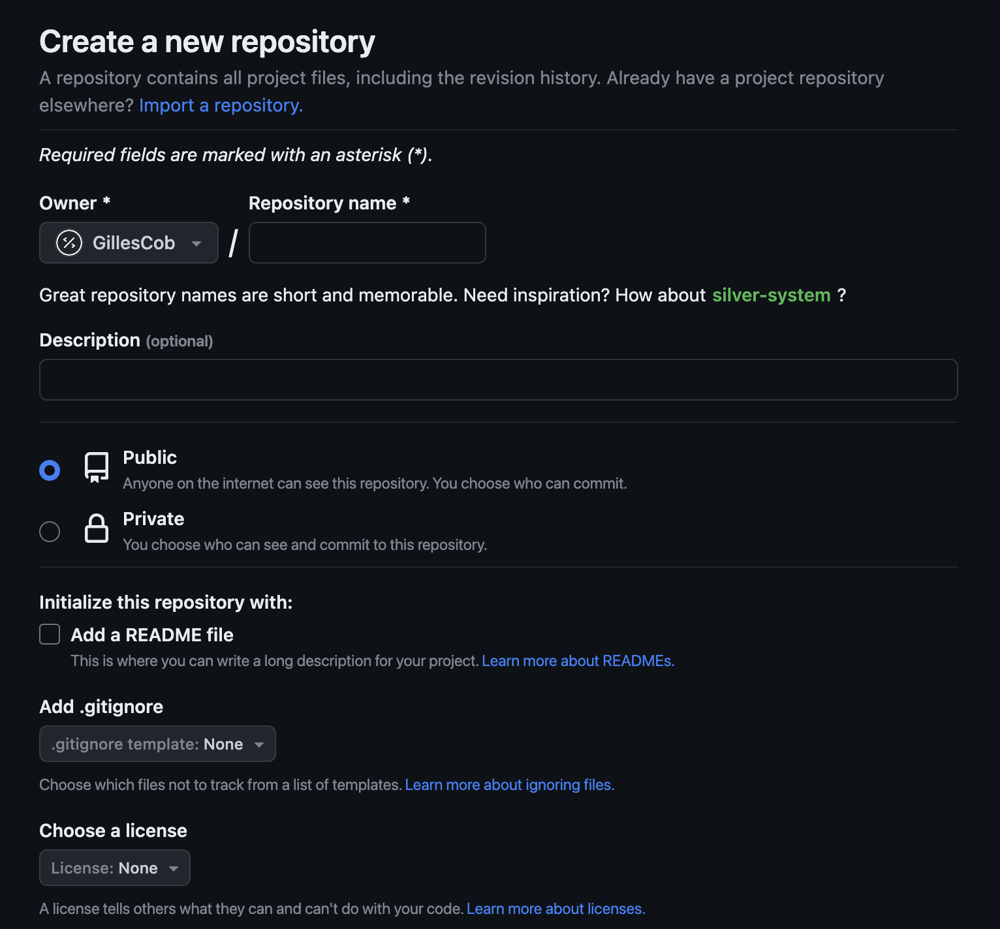
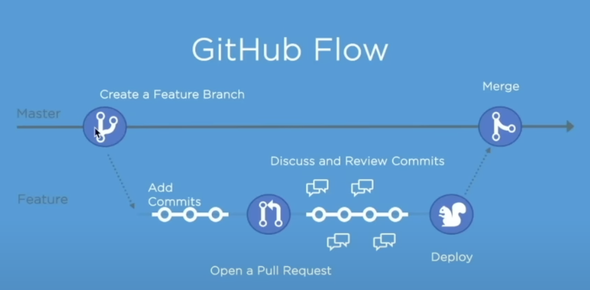

Initialisation du projet
Etape 1 : Créer son projet

Etape 2 : Créer ses fichiers
- Dossier src
- Fichier HTML
- Fichier CSS
- Lier les deux : <link rel="stylesheet" href="style.css">
- Les STAGE : <git add . >

Etape 3 : Mettre en place Vercel
- Lier Vercel et GitHub
- Déployer son projet

Etape 4 : GitHub workflow
- Permet de réaliser des modifs, les tester sans impacter le main
- Permet des échanges au sein de l'équipe
- Permet d'être à plusieurs pour modifier le code
- Je créé une branche
- Je fais mes modifs puis je les commit
- Je créé un pull request avec le détail de toutes mes modifs
- Ce code est vérifié par le N+1, commenté et à moi d'apporter les modifs
- Une fois validées, mes modifs sont ajoutées au main
